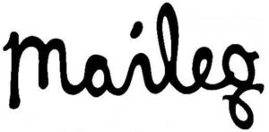

Trade Mark Journal No.2025/012 21 March 2025
WO0000001841892 (9,16,24,25,28,41)
Office of origin: Denmark
Date of International Registration:15 October 2024
Date of designation in the UK:
15 October 2024

International priority date claimed: 18 April 2024
(Denmark)
- Class 9
- Downloadable animated films, cartoons and movies; animated films, cartoons and movies on recorded media; application software; game software; downloadable children's books; children's glasses; children's sunglasses; covers for children's glasses.
- Class 16
- Children's books; colouring books; Christmas cards; greeting cards; posters; pictures; paper tablecloths; paper napkins; paper cuttings; wrapping paper; paper gift ribbons; book binders; bookmarks; bookends; paper or cardboard garlands; paper flags; pencil cases.
- Class 24
- Bed and table covers for children; cushion covers; fabric tablecloths; oilcloth for use as tablecloths; table napkins of textile; tablemats of textile; table napkins of textile; shower curtains of textile or plastic; curtains of textile or plastic; towels and washcloths of textile; tea towels; bed linen; flags (not of paper); cushion covers for children's cushions; cot bumpers [bed linen]; children's lap rugs; towels for children.
- Class 25
- Children's clothing, including headgear; footwear for children; bibs; costumes.
- Class 28
- Games and toys; gymnastic and sporting articles (not included in other classes); ornaments and decorations for Christmas trees; Christmas tree stands; Christmas tree skirts; candle holders for Christmas trees; Christmas stockings; toy Christmas trees; party novelties for Easter; stuffed animals (toys); soft toys (toys); soft toys in the form of pixies; children's quad bikes (toys); play rugs with toys for babies; rattles (toys); rattles with teething rings for babies.
- Class 41
- Rental and production of animated films, cartoons and movies.
Maileg ApS
Representative: LØJE IP, Øster Allé 42, 6., DK-2100 Copenhagen Ø, DENMARK